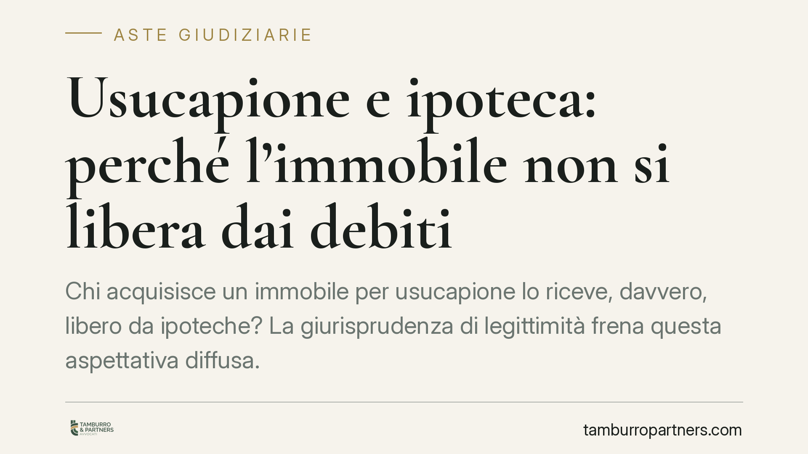

Usucapione e ipoteca: perché l'immobile non si libera dai debiti
Chi acquisisce un immobile per usucapione lo riceve, davvero, libero da ipoteche? La giurisprudenza di legittimità frena questa aspettativa diffusa. La sentenza che accerta l'usucapione non cancella l'ipoteca iscritta prima della domanda e resta inopponibile al creditore e all'aggiudicatario in asta. Il dato cronologico, non la proprietà acquisita, decide l'esito. Vediamo perché e cosa comporta in concreto.

Il falso mito dell'usucapio libertatis
Circola l'idea che l'usucapione "ripulisca" l'immobile da ogni vincolo: chi ha posseduto per vent'anni avrebbe un bene franco da ipoteche e pignoramenti. È una semplificazione pericolosa.
L'usucapione fa acquistare la proprietà a titolo originario. Questo non significa, però, che il possessore riceva il bene privo dei diritti reali di garanzia altrui. Il tema non è la proprietà in sé, ma l'opponibilità dell'acquisto ai terzi che vantano diritti trascritti o iscritti in data anteriore.
In altri termini: il possessore può ben diventare proprietario, ma quella proprietà resta gravata dall'ipoteca che lo ha preceduto.
Inquadramento normativo
Il nodo è cronologico e ruota attorno alla trascrizione.
L'art. 2915 c.c. regola l'opponibilità degli atti rispetto ai creditori: non hanno effetto in pregiudizio del creditore pignorante e di quelli intervenuti gli atti e le domande giudiziali trascritti dopo il pignoramento. L'art. 2914 n. 1 c.c., sul versante delle alienazioni, rende inefficaci verso il creditore le alienazioni di beni immobili trascritte successivamente al pignoramento.
La domanda di usucapione va trascritta ai sensi dell'art. 2653 c.c. La data di quella trascrizione è dirimente: se la domanda è trascritta dopo l'iscrizione dell'ipoteca, la sentenza che accoglie l'usucapione non è opponibile al creditore ipotecario anteriore e non travolge l'ipoteca. Il bene viene venduto all'asta con il vincolo.
Chiude il quadro l'art. 2919 c.c.: la vendita forzata trasferisce all'aggiudicatario i diritti che spettavano a chi ha subìto l'espropriazione, con l'effetto che restano fermi i diritti dei terzi anteriori non opponibili e cadono invece quelli inopponibili. Secondo l'orientamento di legittimità, l'usucapione affermata con domanda posteriore non è opponibile all'aggiudicatario.
La distinzione che fa la differenza
Tutto si gioca sulla sequenza temporale tra due date:
- Ipoteca anteriore / domanda di usucapione posteriore: la sentenza di usucapione non è opponibile al creditore ipotecario anteriore e non travolge l'ipoteca; il bene viene venduto all'asta con il vincolo e l'aggiudicatario non subisce l'acquisto del possessore.
- Domanda di usucapione anteriore / ipoteca posteriore: la posizione del possessore, se la domanda è stata tempestivamente trascritta, può prevalere sull'iscrizione successiva.
L'ordine delle trascrizioni, non l'intensità del possesso, determina chi resta e chi cade.
Implicazioni pratiche
Per il possessore usucapiente, confidare nel solo decorso del tempo è imprudente: senza trascrizione tempestiva della domanda, l'accertamento rischia di essere inopponibile a chi ha già iscritto garanzia.
Per il creditore ipotecario (tipicamente la banca), la garanzia iscritta prima della domanda regge anche a fronte di una successiva sentenza di usucapione.
Per l'aggiudicatario, l'esito è generalmente favorevole quando l'usucapione poggia su domanda posteriore all'ipoteca. Ciò non autorizza automatismi: resta indispensabile verificare la regolarità e la data effettiva delle trascrizioni prima di partecipare.
Le affermazioni di principio vanno sempre calate nel singolo caso: le pronunce di legittimità orientano, ma non sostituiscono l'esame delle visure e degli atti del procedimento.
Cosa fare in concreto
- Verifica le date: confronta la data di iscrizione dell'ipoteca con quella di trascrizione della domanda di usucapione. È il dato che decide l'opponibilità.
- Acquisisci visure aggiornate: ispeziona i Registri Immobiliari per ricostruire la sequenza completa di iscrizioni e trascrizioni gravanti sul bene.
- Se agisci in usucapione, trascrivi tempestivamente la domanda ex art. 2653 c.c.: la trascrizione, e la sua data, condizionano l'efficacia verso i terzi.
- Prima di un'asta, conduci una due diligence sul titolo: controlla la regolarità della trascrizione, i vincoli residui e la perizia, senza affidarti a presunzioni rassicuranti.
- È opportuno non assumere decisioni sul solo dato temporale apparente: l'opponibilità richiede valutazione tecnica puntuale.
---
Contributo informativo a cura di Tamburro & Partners Avvocati. Non costituisce parere legale.
Comprare bene all’asta si può.
Se vuoi acquistare un immobile all’asta in sicurezza o difendere un esecutato, scrivi allo studio. Ti rispondiamo entro un giorno lavorativo.